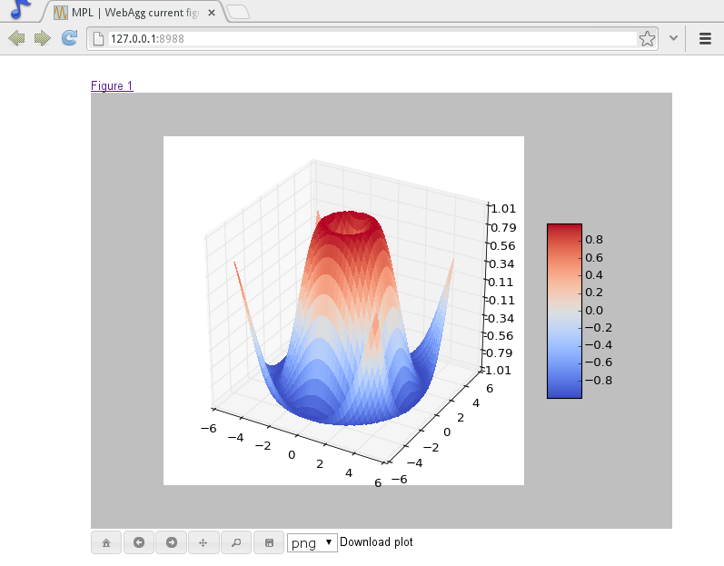

What's new in Matplotlib 1.3 (Aug 01, 2013)#
Note
matplotlib 1.3 supports Python 2.6, 2.7, 3.2, and 3.3
New in 1.3.1#
1.3.1 is a bugfix release, primarily dealing with improved setup and handling of dependencies, and correcting and enhancing the documentation.
The following changes were made in 1.3.1 since 1.3.0.
Enhancements#
Added a context manager for creating multi-page pdfs (see
matplotlib.backends.backend_pdf.PdfPages).The WebAgg backend should now have lower latency over heterogeneous Internet connections.
Bug fixes#
Histogram plots now contain the endline.
Fixes to the Molleweide projection.
Handling recent fonts from Microsoft and Macintosh-style fonts with non-ascii metadata is improved.
Hatching of fill between plots now works correctly in the PDF backend.
Tight bounding box support now works in the PGF backend.
Transparent figures now display correctly in the Qt4Agg backend.
Drawing lines from one subplot to another now works.
Unit handling on masked arrays has been improved.
Setup and dependencies#
Now works with any version of pyparsing 1.5.6 or later, without displaying hundreds of warnings.
Now works with 64-bit versions of Ghostscript on MS-Windows.
When installing from source into an environment without Numpy, Numpy will first be downloaded and built and then used to build matplotlib.
Externally installed backends are now always imported using a fully-qualified path to the module.
Works with newer version of wxPython.
Can now build with a PyCXX installed globally on the system from source.
Better detection of Gtk3 dependencies.
Testing#
Tests should now work in non-English locales.
PEP8 conformance tests now report on locations of issues.
New plotting features#
xkcd-style sketch plotting#
To give your plots a sense of authority that they may be missing,
Michael Droettboom (inspired by the work of many others in
PR #1329) has added an xkcd-style sketch
plotting mode. To use it, simply call matplotlib.pyplot.xkcd
before creating your plot. For really fine control, it is also possible
to modify each artist's sketch parameters individually with
matplotlib.artist.Artist.set_sketch_params().

Updated Axes3D.contour methods#
Damon McDougall updated the
tricontour() and
tricontourf() methods to allow 3D
contour plots on arbitrary unstructured user-specified triangulations.
New eventplot plot type#
Todd Jennings added a eventplot() function to
create multiple rows or columns of identical line segments
As part of this feature, there is a new
EventCollection class that allows for
plotting and manipulating rows or columns of identical line segments.
Triangular grid interpolation#
Geoffroy Billotey and Ian Thomas added classes to perform
interpolation within triangular grids:
(LinearTriInterpolator and
CubicTriInterpolator) and a utility class to
find the triangles in which points lie
(TrapezoidMapTriFinder). A helper class to
perform mesh refinement and smooth contouring was also added
(UniformTriRefiner). Finally, a class
implementing some basic tools for triangular mesh improvement was
added (TriAnalyzer).
Baselines for stackplot#
Till Stensitzki added non-zero baselines to
stackplot(). They may be symmetric or
weighted.
Rectangular colorbar extensions#
Andrew Dawson added a new keyword argument extendrect to
colorbar() to optionally make colorbar
extensions rectangular instead of triangular.
More robust boxplots#
Paul Hobson provided a fix to the boxplot()
method that prevent whiskers from being drawn inside the box for
oddly distributed data sets.
Calling subplot() without arguments#
A call to subplot() without any arguments now
acts the same as subplot(111) or subplot(1, 1, 1) -- it creates one
axes for the whole figure. This was already the behavior for both
axes() and
subplots(), and now this consistency is
shared with subplot().
Drawing#
Independent alpha values for face and edge colors#
Wes Campaigne modified how Patch objects are
drawn such that (for backends supporting transparency) you can set different
alpha values for faces and edges, by specifying their colors in RGBA format.
Note that if you set the alpha attribute for the patch object (e.g. using
set_alpha() or the alpha keyword
argument), that value will override the alpha components set in both the
face and edge colors.
Path effects on lines#
Thanks to Jae-Joon Lee, path effects now also work on plot lines.
Easier creation of colormap and normalizer for levels with colors#
Phil Elson added the matplotlib.colors.from_levels_and_colors()
function to easily create a colormap and normalizer for representation
of discrete colors for plot types such as
matplotlib.pyplot.pcolormesh(), with a similar interface to that
of matplotlib.pyplot.contourf.
Full control of the background color#
Wes Campaigne and Phil Elson fixed the Agg backend such that PNGs are
now saved with the correct background color when
fig.patch.get_alpha() is not 1.
Improved bbox_inches="tight" functionality#
Passing bbox_inches="tight" through to pyplot.savefig now takes
into account all artists on a figure - this was previously not the
case and led to several corner cases which did not function as
expected.
Initialize a rotated rectangle#
Damon McDougall extended the Rectangle
constructor to accept an angle kwarg, specifying the rotation of a
rectangle in degrees.
Text#
Anchored text support#
The SVG and pgf backends are now able to save text alignment
information to their output formats. This allows to edit text elements
in saved figures, using Inkscape for example, while preserving their
intended position. For SVG please note that you'll have to disable
the default text-to-path conversion (mpl.rc('svg',
fonttype='none')).
Better vertical text alignment and multi-line text#
The vertical alignment of text is now consistent across backends. You may see small differences in text placement, particularly with rotated text.
If you are using a custom backend, note that the draw_text renderer
method is now passed the location of the baseline, not the location of
the bottom of the text bounding box.
Multi-line text will now leave enough room for the height of very tall or very low text, such as superscripts and subscripts.
Left and right side axes titles#
Andrew Dawson added the ability to add axes titles flush with the left
and right sides of the top of the axes using a new keyword argument
loc to title().
Improved manual contour plot label positioning#
Brian Mattern modified the manual contour plot label positioning code to interpolate along line segments and find the actual closest point on a contour to the requested position. Previously, the closest path vertex was used, which, in the case of straight contours was sometimes quite distant from the requested location. Much more precise label positioning is now possible.
Configuration (rcParams)#
Quickly find rcParams#
Phil Elson made it easier to search for rcParameters by passing a
valid regular expression to matplotlib.RcParams.find_all().
matplotlib.RcParams now also has a pretty repr and str
representation so that search results are printed prettily:
>>> import matplotlib
>>> print(matplotlib.rcParams.find_all('\.size'))
RcParams({'font.size': 12,
'xtick.major.size': 4,
'xtick.minor.size': 2,
'ytick.major.size': 4,
'ytick.minor.size': 2})
axes.xmargin and axes.ymargin added to rcParams#
rcParams["axes.xmargin"] (default: 0.05) and rcParams["axes.ymargin"] (default: 0.05) were added
to configure the default margins used. Previously they were
hard-coded to default to 0, default value of both rcParam values is 0.
Changes to font rcParams#
The font.* rcParams now affect only text objects created after the
rcParam has been set, and will not retroactively affect already
existing text objects. This brings their behavior in line with most
other rcParams.
Added rcParams["savefig.jpeg_quality"]#
rcParam value rcParams["savefig.jpeg_quality"] was added so that the user can
configure the default quality used when a figure is written as a JPEG.
The default quality is 95; previously, the default quality was 75.
This change minimizes the artifacting inherent in JPEG images,
particularly with images that have sharp changes in color as plots
often do.
Backends#
WebAgg backend#
Michael Droettboom, Phil Elson and others have developed a new backend, WebAgg, to display figures in a web browser. It works with animations as well as being fully interactive.
Future versions of matplotlib will integrate this backend with the IPython notebook for a fully web browser based plotting frontend.
Remember save directory#
Martin Spacek made the save figure dialog remember the last directory
saved to. The default is configurable with the new rcParams["savefig.directory"] (default: '~')
rcParam in matplotlibrc.
Documentation and examples#
Numpydoc docstrings#
Nelle Varoquaux has started an ongoing project to convert matplotlib's docstrings to numpydoc format. See MEP10 for more information.
Example reorganization#
Tony Yu has begun work reorganizing the examples into more meaningful categories. The new gallery page is the fruit of this ongoing work. See MEP12 for more information.
Examples now use subplots()#
For the sake of brevity and clarity, most of the examples now use the newer
subplots(), which creates a figure and one
(or multiple) axes object(s) in one call. The old way involved a call
to figure(), followed by one (or multiple)
subplot() calls.
Infrastructure#
Housecleaning#
A number of features that were deprecated in 1.2 or earlier, or have not been in a working state for a long time have been removed. Highlights include removing the Qt version 3 backends, and the FltkAgg and Emf backends. See API Changes in 1.3.x for a complete list.
New setup script#
matplotlib 1.3 includes an entirely rewritten setup script. We now
ship fewer dependencies with the tarballs and installers themselves.
Notably, pytz, dateutil, pyparsing and six are no longer
included with matplotlib. You can either install them manually first,
or let pip install them as dependencies along with matplotlib. It
is now possible to not include certain subcomponents, such as the unit
test data, in the install. See setup.cfg.template for more
information.
XDG base directory support#
On Linux, matplotlib now uses the XDG base directory specification to
find the matplotlibrc configuration file. matplotlibrc should
now be kept in ~/.config/matplotlib, rather than ~/.matplotlib.
If your configuration is found in the old location, it will still be used, but
a warning will be displayed.
Catch opening too many figures using pyplot#
Figures created through pyplot.figure are retained until they are
explicitly closed. It is therefore common for new users of matplotlib
to run out of memory when creating a large series of figures in a loop
without closing them.
matplotlib will now display a RuntimeWarning when too many figures
have been opened at once. By default, this is displayed for 20 or
more figures, but the exact number may be controlled using the
figure.max_open_warning rcParam.